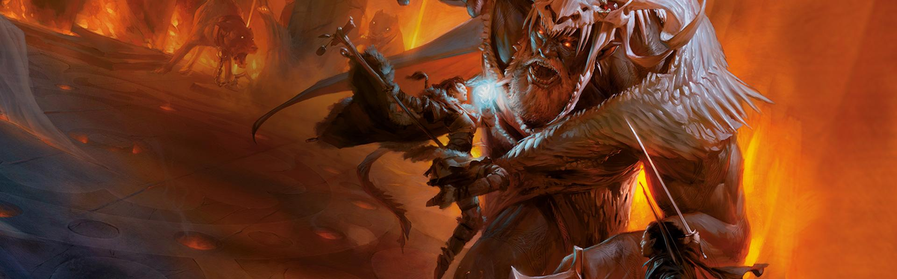
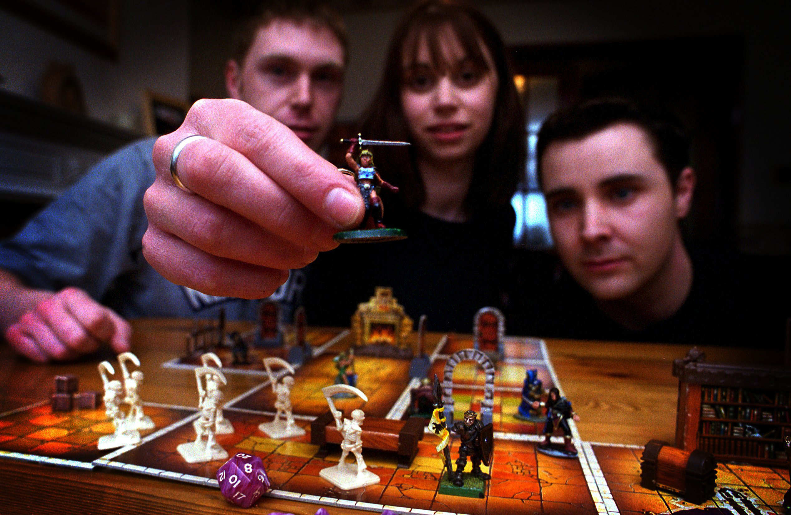
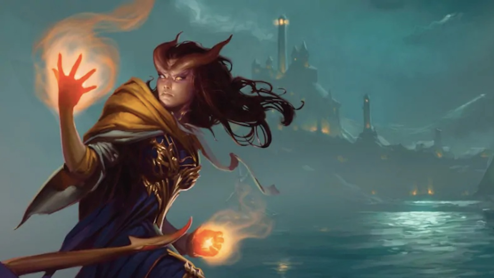

The Dungeons & Dragons roleplaying game is about storytelling in worlds of swords and sorcery. It shares elements with childhood games of make-believe. Like those games, D&D is driven by imagination. It's about picturing the towering castle beneath the stormy night sky and imagining how a fantasy adventurer might react to the challenges that scene presents.
Unlike a game of make-believe, D&D gives structure to the stories, a way of determining the consequences of the adventurers' action. Players roll dice to resolve whether their attacks hit or miss or whether their adventurers can scale a cliff, roll away from the strike of a magical lightning bolt, or pull off some other dangerous task. Anything is possible, but the dice make some outcomes more probable than others.
In the Dungeons & Dragons game, each player creates an adventurer (also called a character) and teams up with other adventurers (played by friends). Working together, the group might explore a dark dungeon, a ruined city, a haunted castle, a lost temple deep in a jungle, or a lava-filled cavern beneath a mysterious mountain. The adventurers can solve puzzles, talk with other characters, battle fantastic monsters, and discover fabulous magic items and other treasure.
One player, however, takes on the role of the Dungeon Master (DM), the game's lead storyteller and referee. The DM creates adventures for the characters, who navigate its hazards and decide which paths to explore. Because the DM can improvise to react to anything the players attempt, D&D is infinitely flexible, and each adventure can be exciting and unexpected.
The game has no real end; when one story or quest wraps up, another one can begin, creating an ongoing story called a campaign. Many people who play the game keep their campaigns going for months or years, meeting with their friends every week or so to pick up the story where they left off. The adventurers grow in might as the campaign continues. Each monster defeated, each adventure completed, and each treasure recovered not only adds to the continuing story, but also earns the adventurers new capabilities. This increase in power is reflected by an adventurer's level.
Worlds of Adventure
The many worlds of the Dungeons & Dragons game are places of magic and monsters, of brave warriors and spectacular adventures. They begin with a foundation of medieval fantasy and then add the creatures, places, and magic that make these worlds unique.
The worlds of the Dungeons & Dragons game exist within a vast cosmos called the multiverse, connected in strange and mysterious ways to one another and to other planes of existence, such as the Elemental Plane of Fire and the Infinite Depths of the Abyss. Within this multiverse are an endless variety of worlds. Many of them have been published as official settings for the D&D game. The legends of the Forgotten Realms, Dragonlance, Greyhawk, Dark Sun, Mystara, and Eberron settings are woven together in the fabric of the multiverse. Alongside these worlds are hundreds of thousands more, created by generations of D&D players for their own games. And amid all the richness of the multiverse, you might create a world of your own.
